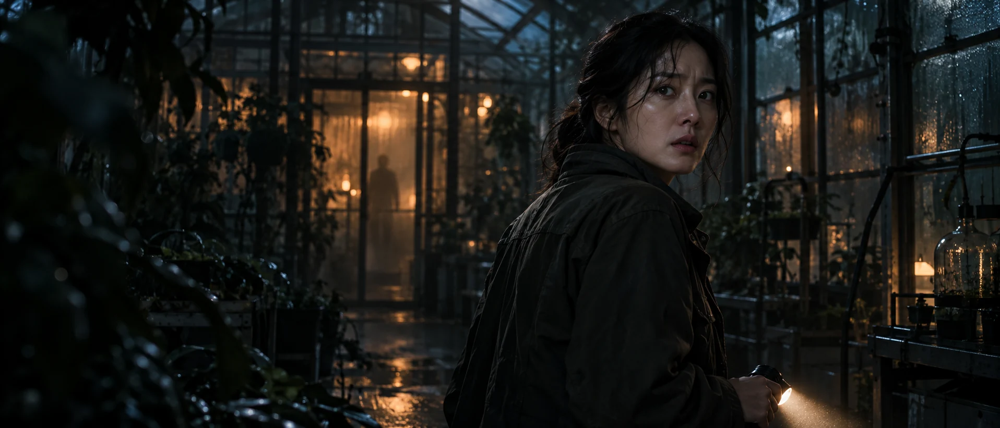

잔상관이 고른 영화영화 탐색 UI 콘셉트
매일 자정, 사라진 사람의 불이 켜진다.
밤의 온실
THE GLASSHOUSE AT NIGHT
좋은 영화의 시작은,
한 장면의 끌림으로부터.
지금 눈여겨볼 영화
기분 따라 고르는 영화
영화를 읽는 시간
THE FILM LIBRARY
영화 둘러보기
오늘의 기분에 맞는 한 편을 찾아보세요.
아직 찜한 영화가 없어요.
마음에 남는 영화를 담아보세요.
이 브라우저에 저장된 작품입니다.
영화를 읽는 시간
장면과 사람, 이야기를 따라 만나는 영화.